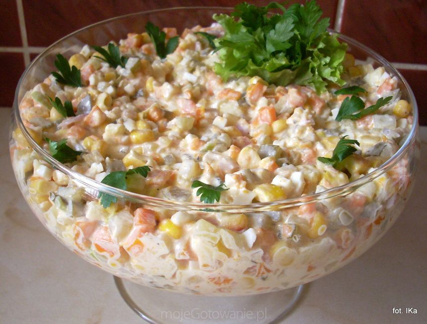

<!DOCTYPE html>
<html lang="en">
</html>
<head> 
    <meta charset="UTF-8">    
    <title>Polish Vegetable Salad</title>
</head>

<body style="background-color:antiquewhite">   
<center><h1 style="background-color:antiquewhite; color:crimson; font-family: fantasy;">Polish (can be Dutch as well!) vegetables salad</h1></center>
<center></center>
<center><i><h2 style="background-color:antiquewhite; color:indigo">Are you polish in the Netherlands? Or maybe you're dutch in Poland? Want to taste something (partly) related to your country? Here we go! Check the recipe below! </h2></i></center>
<p>This authentic Polish salad is known all over Poland as a staple dish in every household. It is served cold as a side to almost any meal. It is great with burgers, hot dogs, Polish sausage, or even schnitzel. </p>
<p>The vegetable salad is a flagship dish of Polish cuisine and everyone has their own proven way of preparing it. This mouth-watering version of the Russian Salad or Polish potato salad called Jarzynowa Salad is Pyszne! That means Yummy!</p>
<center><p> <h1 style="background-color:antiquewhite; color:crimson" ><b>Let's no waste more time, I'm hungry!</b></p></h1></center>
<left><h1 style="background-color: antiquewhite; color:lightcoral">Ingredients</h1></left>
<ul>
<li> 3 medium potatoes </li>
<li> 3 carrots</li>
<li> 3 hard-boiled eggs</li>
<li> 1 stick of celery</li>
<li> 4-5 pickles</li>
<li> 1-2 onions</li>
<li> 1 apple</li>
<li> 3-4 sticks of green onion</li>
<li> ¾ cup of raw, frozen peas</li>
<li> Handful of parsley</li>
<li> A LOT of mayo (we've got you dutchies!)</li>
<li> Salt & pepper</li>
<li> Additionally you may add 1/2 cups of red/black beans and sweet corn (fresh or frozen).</li>
</ul>
<h1 style="background-color: antiquewhite; color:lightcoral">Steps</h1>
<ol>
<p><li> Boil potatoes and carrots in salted water until tender. Hard boil eggs. Let cool.</li></p>
<p><li> Dice up celery, pickles, onion, apple and the green onions into small pieces. Once potatoes, carrots and eggs cool down, also dice into small pieces.</li>
<p><li> In a large mixing bowl combine all ingredients, add peas and herbs. Sprinkle with salt and pepper, add mayo and gently mix until combined. Taste.</li></p>
<p><li> If you feel it’s too dry, add another tablespoon of mayo. Add more salt and pepper, if needed.</li></p>
</ol>
</body>
</html>